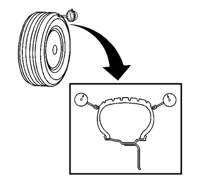

- Elevar el vehículo y soportarlo de manera segura. Consulte Elevación y soporte en alto del vehículo en Información general.
- Marque la posición de las ruedas en referencia a los pernos y la posición específica del vehículo en cada neumático y llanta: ID, IT, DD, DT.
- Retire del vehículo los conjuntos de neumático y llanta. Consulte Desmontaje y montaje de la rueda y el neumático en Ruedas y neumáticos.
- Inspeccione atentamente cada neumático para verificar el correcto y uniforme asentamiento de los rebordes.
- Si alguno de los rebordes no estuviera correcta o uniformemente asentado, reasiéntelo y continúe después con el paso 6. Consulte Desmontaje y montaje de neumáticos en Ruedas y neumáticos.
- Monte un conjunto de neumático y llanta sobre un equilibrador de ruedas tipo giratorio.
Localice el conjunto de neumático y llanta sobre el equilibrador introduciendo un cono a través del lado posterior del orificio piloto central.

- Enrolle la circunferencia exterior de cada neumático con cinta (1) en el área central del perfil.
El enrollado del perfil con cinta permite obtener una lectura eficaz y precisa de la excentricidad.
- Coloque el indicador de dial sobre la porción del perfil del neumático cubierta con cinta de tal forma que el indicador sea perpendicular a la superficie del perfil.
- Gire lentamente el conjunto de neumático y llanta una vuelta completa para localizar el punto bajo.
- Ajuste el indicador de dial en cero en el punto bajo.
- Gire lentamente el conjunto de neumático y llanta una vuelta completa más y mida la cantidad total de excentricidad.
Especificaciones
Máxima excentricidad del conjunto de neumático y llanta medida fuera del vehículo: 1,27 mm (0,050 pulg.)

- Coloque el indicador de dial sobre una sección lisa de la pared lateral del neumático, tan cerca del perfil como sea posible, de tal forma que el indicador sea perpendicular a la superficie de la pared.
- Gire lentamente el conjunto de neumático y llanta una vuelta completa para localizar el punto bajo. Ignore cualquier interrupción o depresión existente debidas a uniones de las láminas.
- Ajuste el indicador de dial en cero en el punto bajo.
- Gire lentamente el conjunto de neumático y llanta una vuelta completa más y mida la cantidad total de alabeo. Ignore cualquier interrupción o depresión debidas a uniones en la pared lateral y obtenga una medida de alabeo medio.
Especificaciones
Máximo alabeo del conjunto de neumático y llanta medida fuera del vehículo: 1,27 mm (0,050 pulg.)
- Repita los pasos del 6 al 15 hasta haber obtenido todas las medidas de excentricidad y alabeo de los conjuntos de neumático y llanta.
- Si CUALQUIERA de las medidas de alabeo de conjuntos de neumático y llanta NO estuviera dentro de las especificaciones, continúe con el paso 19.
- Si TODAS las medidas de alabeo de conjuntos de neumático y llanta ESTUVIERAN dentro de las especificaciones, el alabeo del conjunto de neumático y llanta fuera del vehículo sería considerado aceptable.
- Coloque el indicador de dial sobre la superficie exterior horizontal del talón de llanta, con el neumático aún montado, de tal forma que el indicador de dial sea perpendicular a la superficie del talón de llanta.
La excentricidad de la llanta debe medirse tanto en el talón interior como el exterior, a menos que su diseño no lo permita. Ignore cualquier interrupción o depresión existente debidas a gotas de pintura, rebaba o soldadura.
- Gire lentamente el conjunto de neumático y llanta una vuelta completa para localizar el punto bajo.
- Ajuste el indicador de dial en cero en el punto bajo.
- Gire lentamente el conjunto de neumático y llanta una vuelta completa más y mida la cantidad total de excentricidad de la llanta.
Especificaciones
| • | Máxima excentricidad de la llanta de aluminio, medida fuera del vehículo con el neumático montado: 0,762 mm (0,030 pulg.) |
| • | Máxima excentricidad de la llanta de acero, medida fuera del vehículo con el neumático montado: 1,015 mm (0,040 pulg.) |
- Coloque el indicador de dial sobre la superficie exterior vertical del talón de llanta, con el neumático aún montado, de tal forma que el indicador de dial sea perpendicular a la superficie del talón de llanta.
La excentricidad de la llanta debe medirse tanto en el talón interior como el exterior, a menos que su diseño no lo permita. Ignore cualquier interrupción o depresión existente debidas a gotas de pintura, rebaba o soldadura.
- Gire lentamente el conjunto de neumático y llanta una vuelta completa para localizar el punto bajo.
- Ajuste el indicador de dial en cero en el punto bajo.
- Gire lentamente el conjunto de neumático y llanta una vuelta completa más y mida la cantidad total de excentricidad de la llanta.
Especificaciones
| • | Máximo alabeo de la llanta de aluminio, medida fuera del vehículo con el neumático montado: 0,762 mm (0,030 pulg.) |
| • | Máximo alabeo de la llanta de acero, medida fuera del vehículo con el neumático montado: 1,143 mm (0,045 pulg.) |
- Repita los pasos del 19 al 26 hasta que todas las medidas de alabeo y excentricidad de llanta hayan sido tomadas en cada uno de los conjuntos de neumático y llanta con medidas que NO estaban dentro de las especificaciones.
- Si cualquiera de las medidas de excentricidad de llanta NO estuviera dentro de las especificaciones, proceda a medir la excentricidad con el neumático desmontado.
- En los casos en que las medidas de excentricidad de llanta que ESTABAN dentro de las especificaciones, mientras las medidas del conjunto de neumático y llanta NO lo estaban, sustituya el neumática y equilibre el conjunto. Consultar Equilibrado del conjunto de neumático y llanta - Fuera del vehículo .
- Tras sustituir cualquiera de los neumáticos, vuelva siempre a medir la excentricidad del neumático afectado y del conjunto, o conjuntos de neumático y llanta.
- Utilizando las marcas de coincidencia realizadas antes de la sustitución, monte los conjuntos de neumático y llanta en el vehículo. Consulte Desmontaje y montaje de la rueda y el neumático en Ruedas y neumáticos.
- Bajar el vehículo.
- En el conjunto, o conjuntos, de neumático y llanta con medidas de excentricidad de llanta - con neumático montado - que NO estaban dentro de las especificaciones, marque cada neumático y llanta en relación mutua.
- Desmonte el neumático de la llanta. Consulte Desmontaje y montaje de neumáticos en Ruedas y neumáticos.
- Monte la llanta sobre un equilibrador de ruedas tipo giratorio.
- Sitúe la rueda sobre el equilibrador con un cono a través del lado posterior del orificio piloto central.
- Coloque el indicador de dial sobre la superficie interior horizontal del talón de llanta, con el neumático desmontado, de tal forma que el indicador de dial sea perpendicular a la superficie del talón de llanta.
La excentricidad de la llanta debe medirse tanto en el talón interior como el exterior. Ignore cualquier interrupción o depresión existente debidas a gotas de pintura, rebaba o soldadura.
- Gire lentamente la rueda una vuelta completa para localizar el punto bajo.
- Ajuste el indicador de dial en cero en el punto bajo.
- Gire lentamente la rueda una vuelta completa más y mida la cantidad total de excentricidad de la llanta.
Especificaciones
| • | Máxima excentricidad de la llanta de aluminio, medida fuera del vehículo con el neumático desmontado: 0,762 mm (0,030 pulg.) |
| • | Máxima excentricidad de la llanta de acero, medida fuera del vehículo con el neumático desmontado: 1,015 mm (0,040 pulg.) |
- Coloque el indicador de dial sobre la superficie interior vertical del talón de llanta, con el neumático desmontado, de tal forma que el indicador de dial sea perpendicular a la superficie del talón de llanta.
La excentricidad de la llanta debe medirse tanto en el talón interior como el exterior. Ignore cualquier interrupción o depresión existente debidas a gotas de pintura, rebaba o soldadura.
- Gire lentamente la rueda una vuelta completa para localizar el punto bajo.
- Ajuste el indicador de dial en cero en el punto bajo.
- Gire lentamente la rueda una vuelta completa más y mida la cantidad total de alabeo.
Especificaciones
| • | Máximo alabeo de la llanta de aluminio, medida fuera del vehículo con el neumático desmontado: 0,762 mm (0,030 pulg.) |
| • | Máximo alabeo de la llanta de acero, medida fuera del vehículo con el neumático desmontado: 1,143 mm (0,045 pulg.) |
- Repita los pasos del 2 al 12 hasta que todas las medidas de alabeo y excentricidad de llanta, con el neumático desmontado, hayan sido tomadas en cada rueda con medidas de alabeo, y el neumático desmontado, que NO estaban dentro de las especificaciones.
- Si cualquiera de las medidas de excentricidad de llanta, con el neumático desmontado, NO estuviera dentro de las especificaciones, sustituya la llanta.
Mida siempre la excentricidad de las llantas de sustitución.
- En los casos en que las medidas de excentricidad de llanta que ESTABAN dentro de las especificaciones, mientras las medidas del conjunto de neumático y llanta NO lo estaban, sustituya el neumática y equilibre el conjunto. Consultar Equilibrado del conjunto de neumático y llanta - Fuera del vehículo .
- Utilizando las marcas de coincidencia realizadas antes de desmontar el neumático, o neumáticos, monte el neumático, o neumáticos, sobre la llanta, o llantas, y proceda al equilibrado del conjunto, o conjuntos. Consultar Equilibrado del conjunto de neumático y llanta - Fuera del vehículo .
Mida siempre la excentricidad de cualquiera de los conjuntos de neumático y llanta cuyos neumáticos hayan sido montados y desmontados.
- Utilizando las marcas de coincidencia realizadas antes de la sustitución, monte los conjuntos de neumático y llanta en el vehículo. Consulte Desmontaje y montaje de la rueda y el neumático en Ruedas y neumáticos.
- Bajar el vehículo.